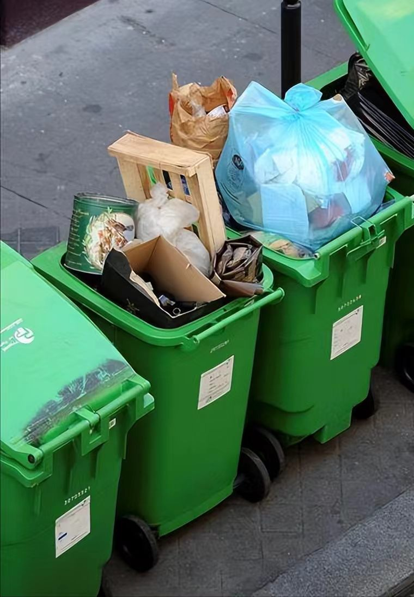
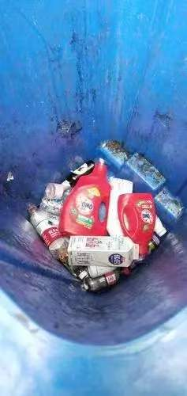
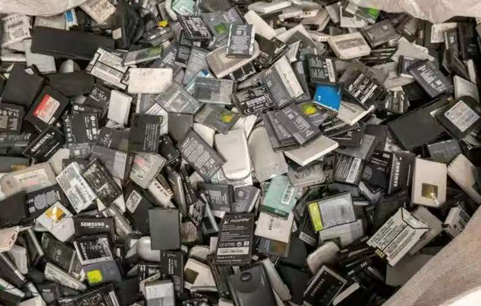

分类记住了，套不上
学生能分清单一物品，但一杯没喝完的奶茶不是「一件垃圾」。 现有的查询工具只回答某物属于哪一类，不回答要拆成几部分、投之前先做什么。


感知、判定、生成，各归其位
这套系统没有让大模型包办一切。确定性的事交给规则，需要理解的事才交给模型。
感知
多模态模型只回答「画面里有什么」，把复合物品拆成部件清单。 它不判断这是哪一类垃圾，也不决定投哪个桶。
判定
部件清单交给规则库。类别归属依赖城市标准与现场条件， 餐盒有没有冲洗干净会直接改变结论。这类判断必须准确，而且事后能一条条核对。
生成
引导文案由规则模板产出，保证每次说法一致； 需要解释依据时再检索知识库，回答里会附上引用来源。
分工最实际的收益是，模型识别错了，只影响部件清单，类别判定不会跟着错。
在一组真实照片上跑出来的结果
28 张真实场景实拍照片，从投放点扩到社区街道、河道与户外堆积点， 共识别出 263 个部件。以下每个数字都能在本仓库的评测产出里复算。
覆盖率从 38% 补到 100%，用了四轮
规则库最初是按奶茶、外卖、快递箱设计的。每换一批照片、换一类场景，缺口就再露一次。
34 个识别部件里，21 个没有被规则接住。 缺口集中在电子废弃物零件、塑料瓶类与包装碎片。
补上 18 条规则后前一批已经全接住，但换成大件场景又掉下来。 木材、家电外壳、轮胎当时一条规则都没有。
新增「大件与废品」规则组后， 13 张照片的 125 个部件全部覆盖。
照片从投放点扩到社区街道、河道与户外堆积点， 装修废料、户外杂物等 15 类没被接住；补齐后 263 个部件全部覆盖。
打开原型，拍一张试试
浏览器直接打开，不用装 App。识别走真实多模态模型，类别判定由规则库完成， 规则文件可以按你所在城市的分类目录自行修改。